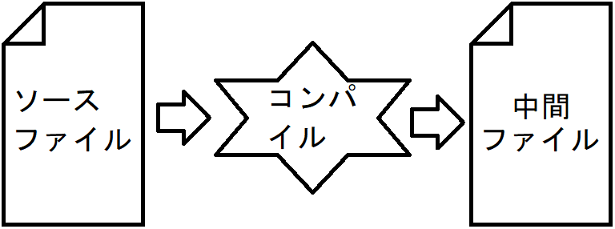
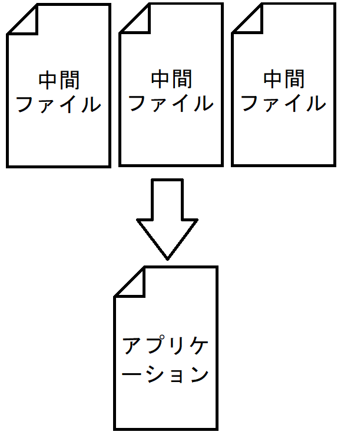
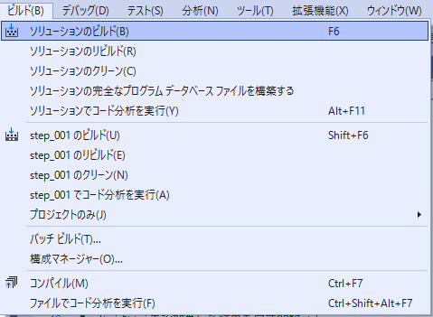
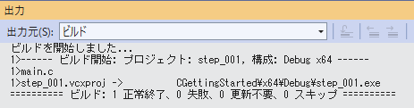
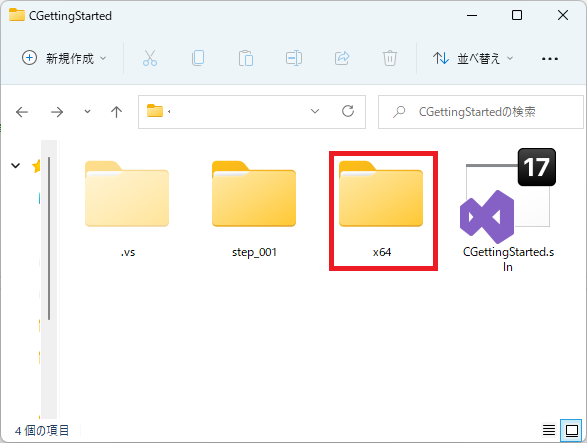
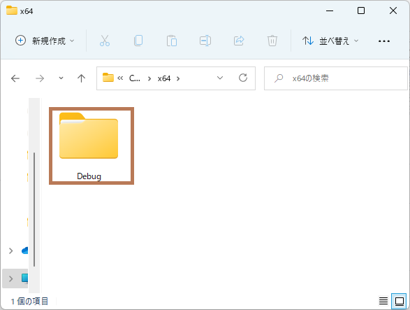
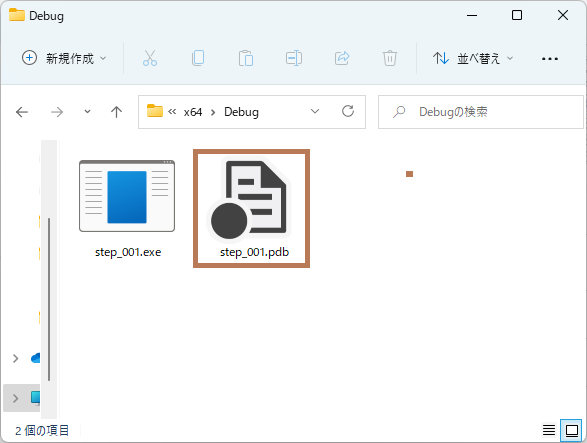
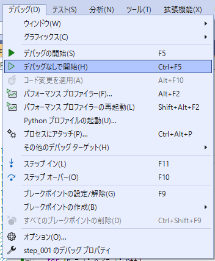
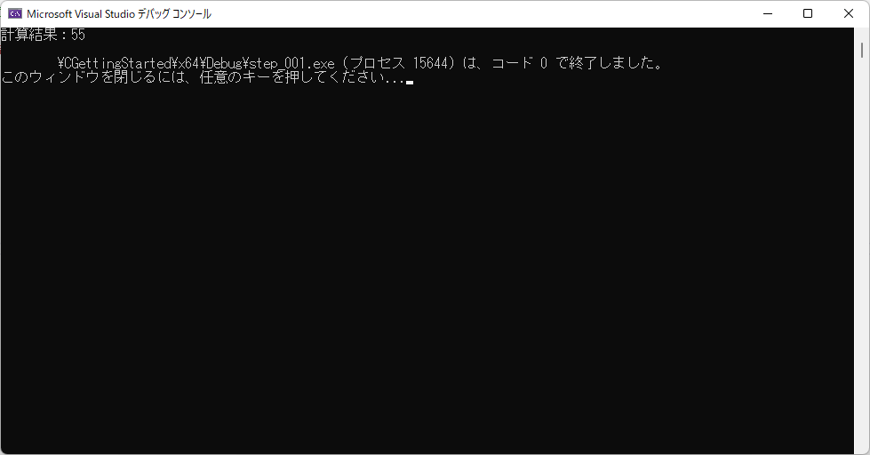

とりあえずプログラミングしてみる
プロジェクトの考え方まず、Visual Studioでプログラミングするため必要な考え方を確認します。ソースファイルをまとめたものを「プロジェクト」と呼びます。 プロジェクト単位でアプリケーションが作られます。  ソリューションの考え方プロジェクトをまとめたものを「ソリューション」と呼びます。 ソリューションとプロジェクトの作成では、ソリューションとプロジェクトを作成しましょう。Visual Studioを起動して、この画面が表示されたら、「コードなしで続行(W)」を クリックします。  メインの画面が開いてきたら、 「ファイル(F)」→「新規作成(N)」→「プロジェクト(P)...」 の順番で選択・クリックします。  次の画面が表示されたら「空のソリューション」を探して選択し、「次へ(N)」を押します。  好きなソリューション名と場所を決めて、「作成(C)」を押します。 ここでは「CGettingStarted」というソリューション名で進めます。  これで「プロジェクトを持っていないソリューション」ができました。 このソリューションにプロジェクトを作成します。 先程と同様に、「ファイル(F)」→「新規作成(N)」→「プロジェクト(P)...」の 順番で選択・クリックします。 「空のプロジェクト」を選択して、「次へ(N)」を押します。 ※空のプロジェクトが複数ある場合は、「C++」「Windows」「コンソール」と 書かれているものを選択します。 次のように設定して、「作成(C)」を押します。 プロジェクト名：好きな名前 場所 ：（勝手に設定されるのでそのままにする） ソリューション：ソリューションに追加 ここでは、プロジェクト名を「step_001」というプロジェクト名で進めます。 ソリューションエクスプローラーに次のように表示されればOKです。 これで、ソリューションの中にプロジェクトを作成できました。 ソースファイルの拡張子についてC言語のソースファイルで使われるファイル拡張子は「.c」です。ですが、この後に作成するソースファイルでは「.cpp」がデフォルトになっています。 これは、Visual StudioがC++の開発環境であることが理由です。 C++はC言語を礎に作られたプログラミング言語のため、C言語のプログラムも 可能になっています。 ここはあくまでも「C言語入門」のため、拡張子も「.c」にしています。 ソースファイルの作成ソースファイルを作成します。ソリューションエクスプローラーで、先ほど作成したプロジェクトの中にある 「ソースファイル」を右クリックします。 そして「追加(D)」→「新しい項目(W)...」を選択・クリックします。 次の順番で操作します。 「C++ファイル(.cpp)」を選択する。 名前(N):に好きなファイル名を入力する。 ここでは「main.c」で統一します。 「追加(A)」を押します。 次のようにソースファイル内に、追加したファイルが表示されればOKです。 プログラムを記述する次のように入力してください。内容はまだ理解できなくても大丈夫です。こういったプログラムを入力する作業を「コーディング」とも言います。
コンパイルとビルドについてこのあとプログラムを「コンパイル」するのですが、Visual Studioには別に「ビルド」という言葉があります。 まず、コンパイルはプログラムをアプリケーションに変換する作業 ということを前に説明しました。 これは厳密には間違っています。 実は「アプリケーション」ではなく「中間ファイル」に変換する作業なのです。  規模が大きいプログラムでは、このソースファイルが複数作られていることが 多いです。 ソースファイルの数だけ中間ファイルが作られます。 その中間ファイルを1つにまとめることで「アプリケーション」が作られます。 これを「リンク」と言います。  この「コンパイル」と「リンク」の一連の流れのことを「ビルド」と呼びます。 ビルドするでは、ビルドします。「ビルド(B)」をクリックして、「ソリューションのビルド(B)」をクリックします。  「出力」というウィンドウが表示され、 「========== ビルド: 1 正常終了、0 失敗、0 更新不要、0 スキップ ==========」 と表示されればOKです。  もし表示されない場合は、入力ミスしています。 入力したプログラムを見直しましょう。エラー一覧の内容から推測ができます。 ほんの一部ですが、下記に推測できるパターンを記載します。
ビルドが終了したら、完成物を確認してみましょう。 ソリューションが保存されているフォルダを開いてください。 そこから「x64」→「Debug」とフォルダを開いてください。   アプリケーションとなる「.exe」ファイルの他に、拡張子が「.pdb」のファイルが あると思います。  これが「中間ファイル」です。 実行するでは、さっそく実行してみましょう。何も起きない。もしくは一瞬で画面が消えませんでしたか？ はい、プログラムがすぐに終了するため一瞬で画面が閉じてしまいます。 Visual Studioからプログラムを実行することによって、 自動的に画面が閉じないようにできますので、その方法で実行します。 「デバッグ(D)」をクリックし、「デバッグなしで実行(H)」をクリックします。  その結果、次の画面が表示されます。  「計算結果：55」がプログラムの実行結果となります。 それ以降のテキストはVisual Studioが表示しています。 何か適当にキー(Enterキーなど)を押すと画面が終了します。 |
IT入門・研究室 | C言語入門
|
当Webサイトに記載されている内容は、筆者が独自に調査・研究した内容をまとめています。 そのため、記載されている内容によって、 いかなる損害が発生したとしても、筆者は責任を負いかねますのでご了承ください。 |